Friday, April 10: Arrival
Narita Airport — Souvenir Shopping
Terminal 1 & 2, 4F
Nice-to-Have
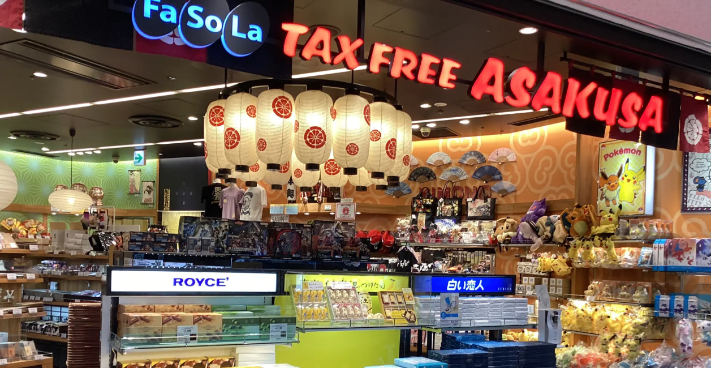
Budget 90 minutes minimum from landing to exiting the terminal (up to 2 hours if busy) — keep airport shopping as a "nice to have," not a must.
Fa-So-La Souvenir — extensive Japanese souvenirs, folkcraft, and food gifts.
Akebono — 70-year-old rice cracker shop, beautiful traditional packaging.
BLUE SKY / ANA FESTA — Japanese Kit Kats in 100+ flavors, Pocky in regional-limited editions, Shingen Mochi.
Gift Keisei Japanese Souvenir — kimono accessories, key holders, traditional gifts.
⚠️ Most shops open 7:30–8:00 AM and close around 8:00–9:00 PM.
Dinner
Low-Stress
Primary: Kineyamugimaru (udon) — comfortable and low-stress after travel. Recommended for the first night.
Plan B: Kaiten sushi (conveyor belt) — call ahead to confirm proper chairs and tables.
📍 Kineyamugimaru on Maps
Keisei Skyliner to Hotel
Reserved Seats
No Standing
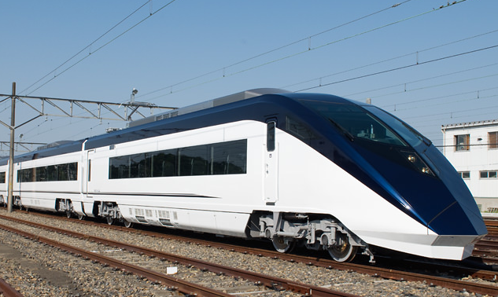
Reserved seats, smooth ride, no standing — the best option after a long flight. Drops you close to Resol Stay Akihabara, your hotel for the week.
📍 Resol Stay Akihabara on Maps
Saturday, April 11: Asakusa
9:30 AM — Kimono Rental
Traditional
~30 Min to Dress
Get dressed in kimono with hair styling included. Allow about 30 minutes to get fully dressed and ready before heading out.
10:00 AM — Senso-ji Photoshoot (90 min)
Iconic
Take It Slow
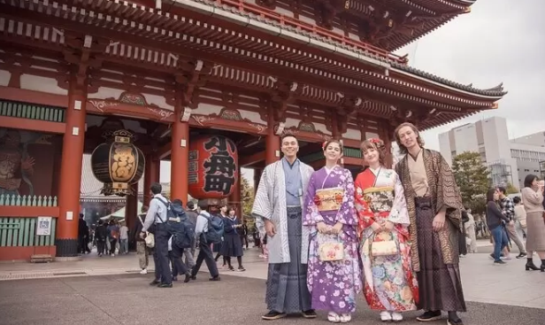
90-minute photoshoot around the temple grounds — Kaminarimon gate, Nakamise shopping street, and the main hall.
⚠️ Geta sandals can be tiring over distance — take it slow and rest whenever needed.
📍 Senso-ji Temple on Maps
11:30 AM — Return Kimonos
Drop-Off
Return the kimonos to the rental shop before heading to lunch.
12:00 PM — Lunch: Gyukatsu Kyoto Katsugyu
4.9 Stars
Call Ahead
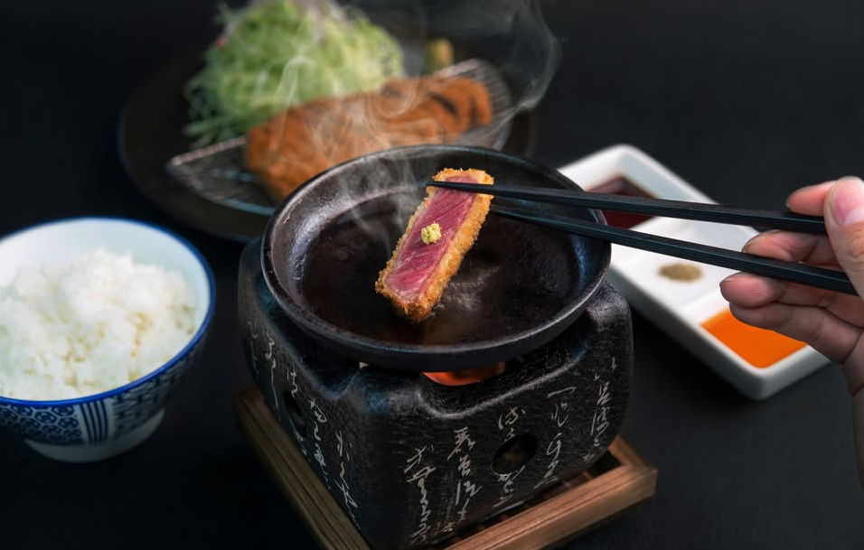
Extremely popular beef cutlet restaurant — have the hotel concierge call ahead to request ground-floor seating. Arrive at open to avoid a wait. The DIY searing element is fun without being physically demanding.
Plan B: Nakamise-dori street food stalls or the nearby depachika at Matsuya Asakusa.
📍 Gyukatsu Kyoto Katsugyu on Maps
3:00 PM — Kappabashi Kitchen Supply Town
Flat Terrain
Easy Walking
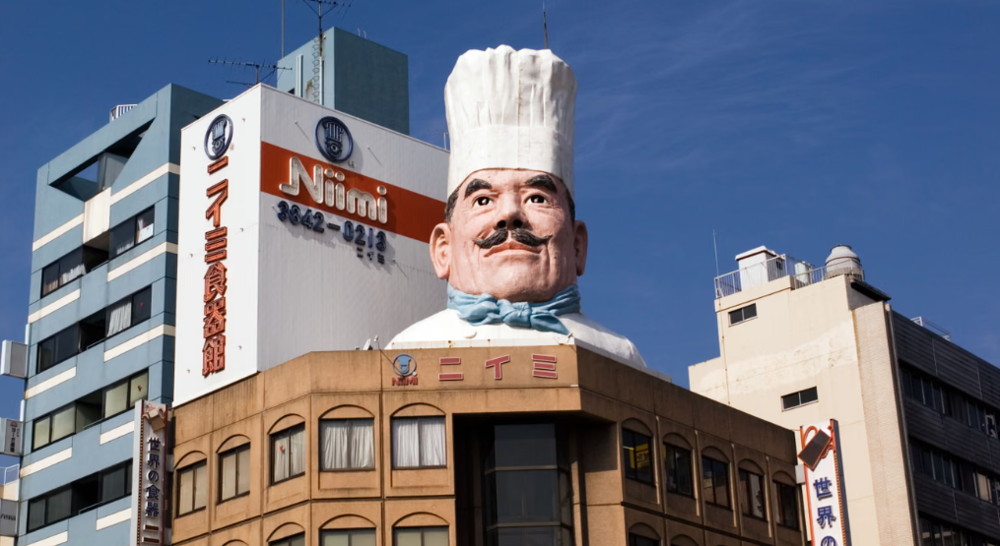
A fascinating street of professional kitchen supply shops — knives, ceramics, plastic food models, and cooking tools. Flat terrain throughout.
⚠️ Shops close around 5:00 PM — arrive by 3:00 PM to have time to browse.
📍 Kappabashi on Maps
Evening — Dinner: Dandadan
Ramen & Gyoza
Lively and beloved chain known for hearty ramen and crispy gyoza. A satisfying end to a full day.
📍 Dandadan on Maps
Sunday, April 12: Imperial Palace & Ginza
10:30 AM — Nijubashi Bridge
Flat Walk
Iconic Photo Stop
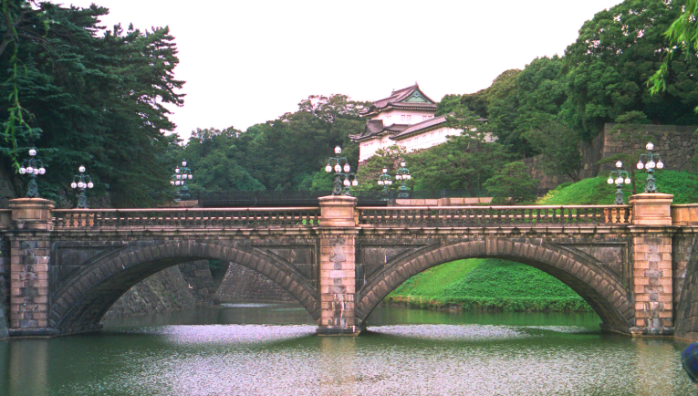
Taxi from Akihabara (~10 min). A flat 2-minute walk for the iconic Imperial Palace castle photo. Then taxi directly into north Ginza — no need to linger.
📍 Nijubashi Bridge on Maps
11:30 AM — Ginza Itoya
Elevator Access
12 Floors
12 floors of premium stationery, pens, and paper goods. Start at the top floor and work your way down by elevator. Buy postcards here and post them directly from the store's mail service.
📍 Ginza Itoya on Maps
12:15 PM — HANDS Ginza
Tax-Free
1 Min Walk
Same block as Itoya, 1-minute walk. Japanese gadgets, lifestyle goods, and souvenirs across 5 floors. Tax-free shopping with your passport.
12:45 PM — Pola Museum Annex
Free Entry
Rest Stop
Free gallery one block over with elevator access. About 20 minutes — a quiet, calm space perfect for a rest before the Aquarium.
1:15 PM — Mitsukoshi Depachika (B1/B2)
Lunch
Food Hall
Head into Mitsukoshi and take the elevator down to the legendary basement food halls. Pick up lunch from the food stalls, then eat at the Hokoten car-free street tables outside on Chuo-dori, or find a seat on the 9F terrace.
2:15 PM — ART AQUARIUM MUSEUM (Mitsukoshi 9F)
Pre-Book Tickets
Elevator Access
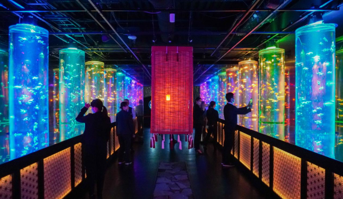
Slow, immersive goldfish art installation — one of Tokyo's most unique experiences. Budget 45–60 minutes. Fully elevator-accessible throughout Mitsukoshi department store.
⚠️ Book tickets online in advance.
📍 ART AQUARIUM on Maps
3:15 PM — Onitsuka Tiger
Multilingual Staff
Short walk south to mid-Ginza. Multilingual staff — great selection of shoes and accessories in the iconic brand's sleek store.
4:00 PM — Uniqlo + GU
Tax-Free
Café Break
Both Uniqlo and GU are in the same building, one block south. Both are tax-free with passport. The Uniqlo top-floor café offers a seated break with views if needed.
5:00 PM — Ginza Six: Dinner + Rooftop
360° Views
Open Until 11 PM
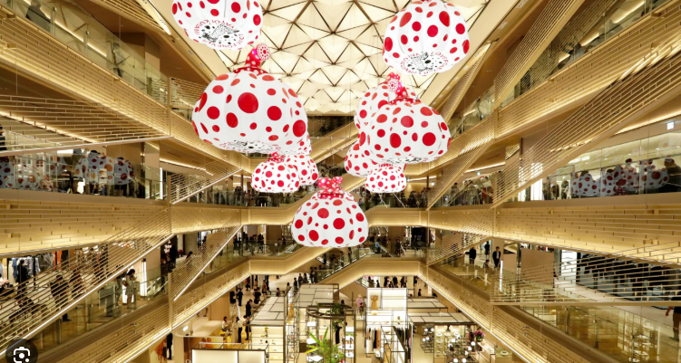
Pick up dinner from the basement depachika, then take the elevator to the 14F rooftop garden for 360° views including Tokyo Tower. Open seating, open until 11 PM — stay as long as you like.
📍 Ginza Six on Maps
~6:30 PM — Taxi back to Akihabara
~15 Min
Comfortable taxi ride back to the hotel (~15 minutes).
Monday, April 13: Roppongi & Shibuya
10:00 AM — National Art Center, Roppongi
Elevator Access
Free Exhibitions
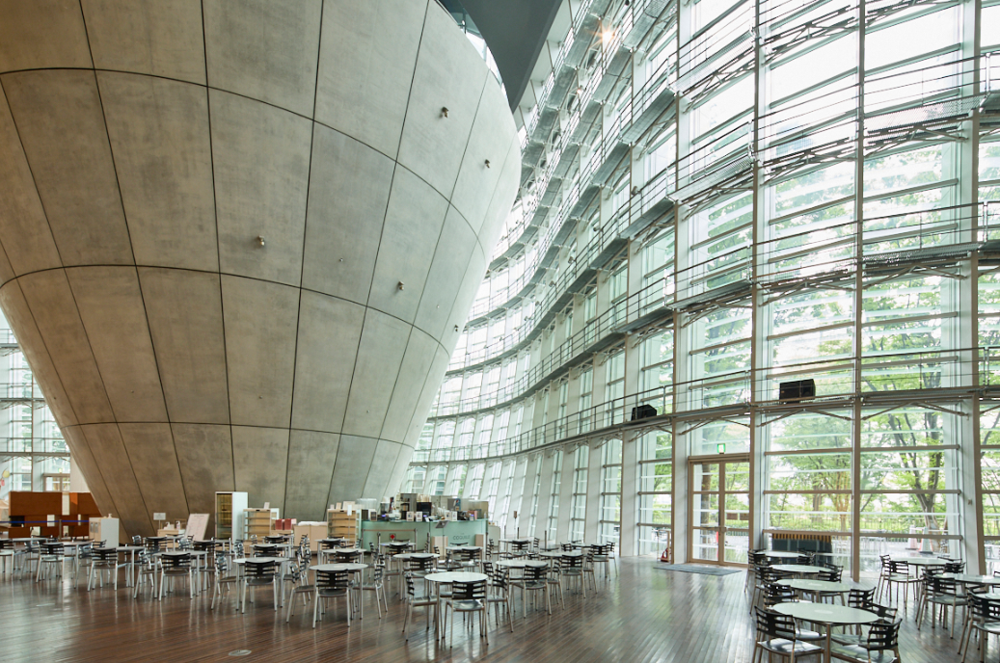
Taxi from hotel (~20 min). One of Japan's largest exhibition spaces — a sweeping undulating glass facade that is architecturally stunning on its own. Multiple free exhibitions plus one ticketed show. Café inside for a mid-visit sit-down. Budget 90 min–2 hours.
⚠️ Check nact.jp before you go — exhibitions rotate.
⚠️ Closed Tuesdays — Monday April 13 is fine.
📍 National Art Center on Maps
12:00 PM — Taxi to Shibuya (~25 min)
Direct Taxi
Comfortable taxi ride from Roppongi to Shibuya.
12:15 PM — Lunch: Jikasei MENSHO (Shibuya Parco B1F)
Ramen
Basement Level
Highly regarded ramen in the basement of Shibuya Parco — a great start before exploring the floors above.
📍 Jikasei MENSHO on Maps
1:15 PM — Shibuya Parco
Nintendo Tokyo
Pokémon Center
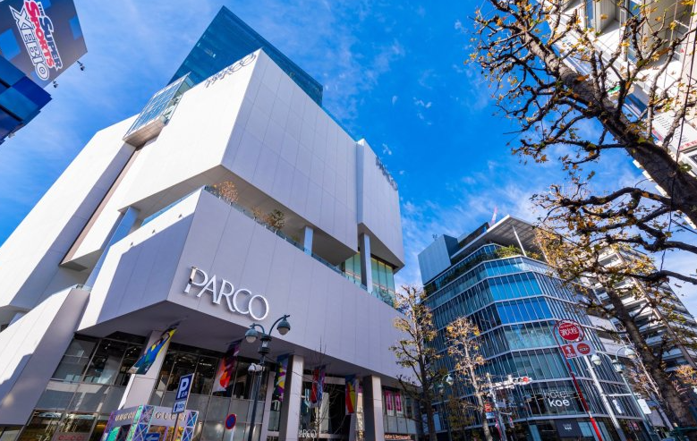
Start at Floor 6 — Nintendo Tokyo, Pokémon Center, Capcom Store, and Godzilla Store are all on one floor. Work your way down through the fashion floors at your own pace. Café spaces on various floors for rest breaks.
⚠️ Layout can be maze-like — take it slow.
3:30 PM — Shibuya Center-gai
Flat Pedestrian Street
Street Food
Lively car-free street lined with shops and food stalls. Good spot for takoyaki (octopus balls) or crepes as an afternoon snack.
5:00 PM — Dinner: Sushi no Midori
Arrive at Open
No Wait
Arrive right at 5 PM when dinner service opens to avoid a wait — worth the timing.
Plan B: Shibuya Hikarie depachika (B2F) — 5-minute walk, great affordable bento sets.
📍 Sushi no Midori on Maps
6:30 PM — Share Lounge (Shibuya Tsutaya, 4F)
Shibuya Crossing View
¥2,500 All-Inclusive
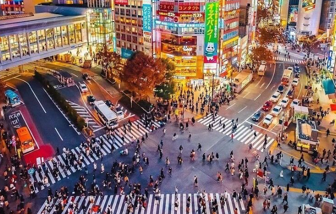
~¥2,500 per person includes unlimited drinks and snacks. Stadium-style seating faces the famous Shibuya Crossing directly. Open until 11 PM — stay as long as you like. 2-minute walk from Sushi no Midori.
📍 Shibuya Tsutaya on Maps
~8:00 PM — Taxi back to Akihabara
~20 Min
Comfortable taxi ride back to the hotel.
Tuesday, April 14: Last Day Together
9:00 AM — Meiji Shrine (Harajuku)
Flat Gravel Path
Arrive Early
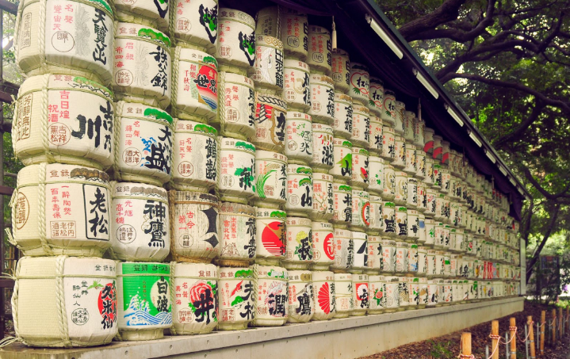
Taxi from Akihabara (~20 min). Enter from the Harajuku/south gate. The forested path to the shrine is about 10–12 minutes each way on flat gravel — serene and beautiful in the early morning before crowds arrive. Budget 75 minutes total.
📍 Meiji Shrine on Maps
11:00 AM — Taxi to Shinjuku (~15 min)
Direct Taxi
Short taxi ride from Harajuku to Shinjuku.
11:15 AM — Shinjuku Gyoen
Cherry Blossoms
¥500 Entry
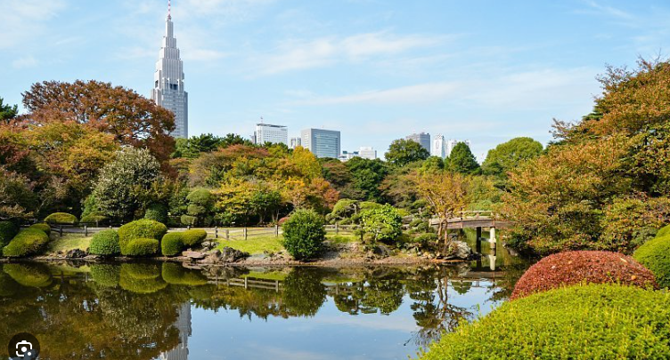
¥500 per person — enter from the Shinjuku gate on the west side. Mid-April is peak cherry blossom season; this is one of the most beautiful moments of the entire trip. Wide flat lawns, ponds, bridges, and benches throughout — three distinct landscape styles (Japanese, English, French). Budget a relaxed 90 minutes.
⚠️ Closes at 4 PM — no alcohol permitted inside.
📍 Shinjuku Gyoen on Maps
1:00 PM — Isetan Shinjuku Depachika
World-Class Food Hall
Omiyage
10-minute walk north from Gyoen. The B1/B2 food hall at Isetan is considered one of the finest depachika in all of Japan. Pick up lunch here and grab last-minute omiyage (gifts) — wagyu, pastries, bento, sweets, all in beautiful gift-ready packaging.
📍 Isetan Shinjuku on Maps
2:30 PM — Don Quijote Shinjuku Kabukicho
Tax-Free
Last-Minute Souvenirs
Chaotic, fun, and packed with novelty gifts, snacks, cosmetics, and quirky finds. Tax-free with passport. Great for picking up anything you missed during the week.
📍 Don Quijote Shinjuku on Maps
3:30 PM — Godzilla Head
Quick Photo Stop
On the Way
One block from Don Quijote — no detour needed. Look up on the way out. The Godzilla Head roars on the hour from 12–8 PM. Quick photo stop, then grab a taxi.
Plan B if Don Quijote felt like too much:
Memory Lane (Omoide Yokocho) — a narrow alley of tiny yakitori stalls near Shinjuku's west exit, atmospheric and easy to duck into for a snack or drink.
3D Cat Billboard — just outside Shinjuku east exit at Cross Shinjuku Vision, a giant realistic cat stretches and looks down from the curved screen. Free to watch, runs throughout the day.
Okadaya Shinjuku — beloved craft store a short walk from the east exit, with a large yarn and knitting floor. Calm, browsable, and very mom-friendly.
📍 Memory Lane on Maps
📍 Okadaya Shinjuku on Maps
4:00 PM — Return to Hotel
Rest Before Dinner
Head back to Resol Stay Akihabara to rest and get ready for the farewell dinner.
6:30 PM — Farewell Dinner: Miyakodori
Splurge
Geisha Performance
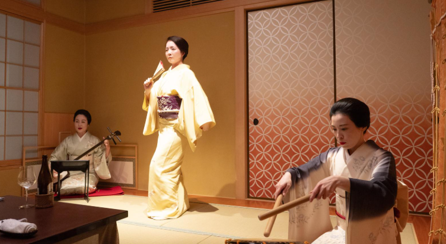
Taxi to Asakusa (~25 min). Miyakodori Geisha Entertainment & Restaurant — practicing geisha perform live throughout dinner and photography is welcome. Open 2:30–10 PM on Tuesdays. Price level 3 (a splurge worth making). A special farewell dinner that brings the whole trip full circle back to Asakusa.
📍 Miyakodori on Maps
Wednesday, April 15: Parents' Solo Day — Ueno & Yanaka
9:30 AM — Ueno Park
Cherry Blossoms
Pond Loop
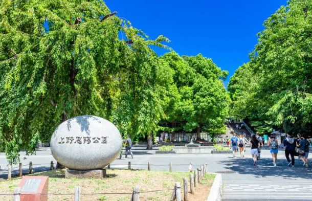
Gentle cherry blossom stroll through Ueno Park followed by a loop around Shinobazu Pond. One of Tokyo's most famous hanami (blossom-viewing) spots.
📍 Ueno Park on Maps
10:30 AM — Tokyo National Museum
English Signage
Main Building Only
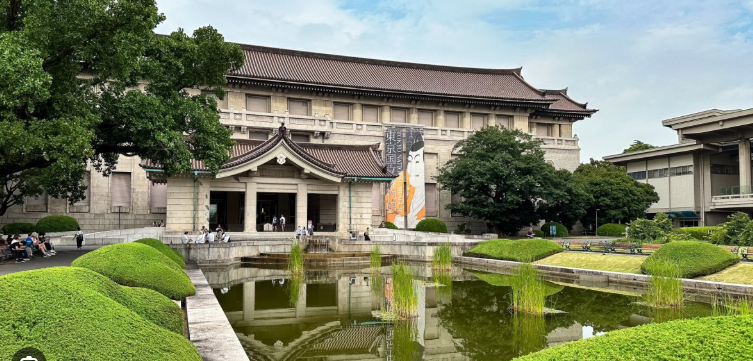
Japan's oldest and largest museum. Focus on the main building only — English signage throughout makes it easy to navigate at your own pace.
📍 Tokyo National Museum on Maps
12:15 PM — Ameyoko Market
Lunch
Browse
Lunch at Minatoya — point at the pictures to order, kaisendon (seafood rice bowls) from ¥500. Browse the lively open-air market stalls after eating.
📍 Ameyoko Market on Maps
1:45 PM — Yanaka Ginza
Gently Downhill
Cat Shops & Snacks
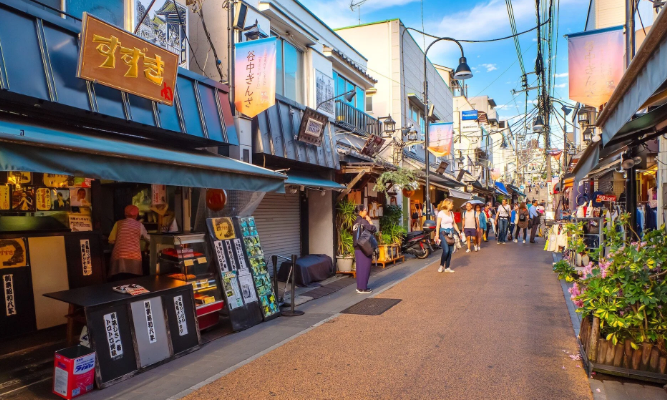
Taxi to the top of Yanaka Ginza, then walk gently downhill through this charming old-Tokyo shopping street. Cat-themed shops and street snacks throughout.
📍 Yanaka Ginza on Maps
3:00 PM — Optional: Ueno Zoo
Flat & Paved
If Energy Allows
If energy allows, taxi back to Ueno Zoo — fully flat and paved throughout. Home to Japan's famous giant pandas.
5:00 PM — Return to Hotel
Rest & Freshen Up
Head back to Resol Stay Akihabara to rest before the evening.
6:45 PM — Kingdom Hall Meeting
~25 Min by Taxi
Taxi to Kingdom Hall at 7-3-3 Arakawa, Arakawa-ku (~25 min). Meeting at 7:30 PM.
📍 Kingdom Hall on Maps
Thursday, April 16: Parents' Solo Day — Meguro & Hamarikyu
10:00 AM — Meguro River Canal Walk
Late Blossoms
Flat Path
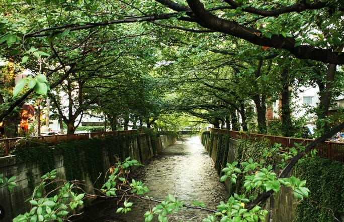
Stroll north along the canal toward Nakameguro Station. Late blossoms, boutique shops, and a relaxed neighbourhood atmosphere along the water.
📍 Meguro River on Maps
11:30 AM — Brunch: flour+water
English-Friendly
Unlimited Tea
Brunch set for ¥1,980 with unlimited rotating tea and English-friendly staff. A calm, welcoming spot along the canal.
Plan B: Convenience store or a canal-side café for a casual affordable bite.
📍 flour+water on Maps
1:00 PM — Continue South Along the Canal
Best Blossom Canopy
Boutiques
The southern stretch has the best blossom canopy and reflections on the water. Browse the boutiques and cafés at a leisurely pace.
2:30 PM — Hamarikyu Gardens
¥300 Entry
Matcha on the Water
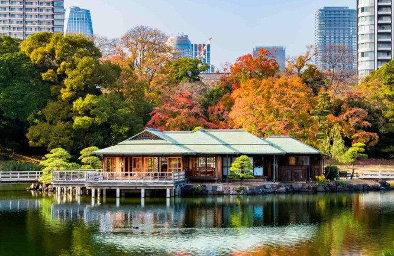
Taxi to Hamarikyu Gardens (¥300 entry). The Nakajima Teahouse sits on a small island in the tidal pond — enjoy matcha and sweets on the water in one of Tokyo's most beautiful traditional garden settings.
📍 Hamarikyu Gardens on Maps
5:00 PM — Optional: Tokyo Skytree
If Energy Allows
Pre-Book Tickets
If energy allows, visit the Skytree for sunset views over the city.
⚠️ Buy tickets in advance at tokyo-skytree.jp.
📍 Tokyo Skytree on Maps
Evening — Taxi Home
Safe Travels
Comfortable taxi ride back to the hotel for the final night in Tokyo.
Friday, April 17: Travel Day
Airport Transfer — Narita
Keisei Skyliner
Reserved Seats
Take the Keisei Skyliner from Ueno/Nippori back to Narita Airport. Reserved seats, smooth ride — same as the trip in. Budget around 90 minutes from hotel departure to clearing security.
📍 Keisei Line on Maps
Airport Souvenir Run
Terminal 1 & 2, 4F
Last Chance
Last opportunity for any final gifts — Fa-So-La, Akebono, BLUE SKY/ANA FESTA, and Gift Keisei are all in the Terminal 4F shopping area.
⚠️ Most shops open 7:30–8:00 AM and close around 8:00–9:00 PM.
Bon Voyage!
Safe Flight
Wishing you both a smooth flight home. What a trip.
Tuesday, April 7: Arrival + Odaiba
2:20 PM — Land at Haneda
Haneda Airport
Budget 60–90 minutes through immigration and baggage claim. Taxi from Haneda to Resol Stay Akihabara is ~35–45 min.
📍 Haneda Airport on Maps
~4:00 PM — Hotel Check-In
Freshen Up
Check in to Resol Stay Akihabara and freshen up before heading out for the evening.
📍 Resol Stay Akihabara on Maps
~5:30 PM — Taxi to Odaiba
~35 Min
Taxi to DiverCity Tokyo Plaza on Odaiba. Head to the Gundam Base shop inside to browse before the evening show.
📍 DiverCity Tokyo Plaza on Maps
Gundam Base Shop
Inside DiverCity
Largest Gunpla retail store in Tokyo — wide selection of kits, figures, and limited items. Browse before the 7 PM projection show starts.
7:00 PM — WALL-G Projection Show
Unicorn Gundam
Free to Watch
The WALL-G projection mapping show plays on the life-size Unicorn Gundam statue outside DiverCity. Shows run on the hour in the evening — 7 PM is the perfect slot.
Dinner — DiverCity or Odaiba Waterfront
Flexible
DiverCity has a large restaurant floor. The Odaiba waterfront has plenty of alternatives with views of the Rainbow Bridge.
If you can get a reservation: Tokyo Kushiya — izakaya-style skewer restaurant, great for a first night out. Check Google tomorrow for availability.
📍 Tokyo Kushiya on Maps
📍 Dining in Odaiba on Maps
Wednesday, April 8: Jimbocho + Daikanyama + Harajuku + Shinjuku
Slow Morning at Hotel
No Rush
Late start — Jimbocho bookshops open from 11 AM so no need to rush.
11:00 AM — Jimbocho Book Town
Used Books
English Section
Taxi to Jimbocho, Tokyo's legendary used-book district. Kitazawa Bookstore (2F) has a good English-language section. Also check out Nyankodo (Anegawa bookstores) — a cat-themed antiquarian shop beloved by regulars. Wander the street at your own pace.
📍 Jimbocho on Maps
~1:15 PM — Taxi to Daikanyama
~25 Min from Jimbocho
Head south from Jimbocho to Daikanyama — easy shot down toward Shibuya.
~1:30 PM — Daikanyama T-Site
Tsutaya Books
Art & Design Books
Daikanyama T-Site is one of the most beautiful bookshops in the world — a flagship Tsutaya concept store set across three low wooden buildings in a quiet, wooded plaza. The focus is art, design, photography, film, architecture, and music. Browsable in English. Budget 60–90 minutes here easily — this is exactly the kind of place you'll want to linger.
📍 Daikanyama T-Site on Maps
~3:15 PM — Taxi to Harajuku
~15 Min from Daikanyama
Short hop north to Harajuku for the afternoon shopping stretch.
~3:30 PM — Harajuku — Shopping Route
Laforet → Cat Street
Laforet Harajuku — multi-floor fashion complex, eclectic and fun.
Kiddy Land — beloved toy and character goods store, 5 floors on Omotesando-dori.
Ura-Harajuku / Cat Street — wander the backstreets for vintage shops and independent boutiques.
PAMM-ke — cute accessories and stationery, worth a stop.
B-Side Label + Junie Moon — on the same block, stickers and kawaii goods.
Sanrio — shop-only visit, no café needed here.
📍 Laforet Harajuku on Maps
~6:30 PM — Dinner in Omotesando
Before Shinjuku
Flexible
Plenty of dinner options in Omotesando after the Harajuku shopping stretch — no need to plan ahead. Eat here before heading to Shinjuku for the night.
📍 Omotesando Dining on Maps
~8:00 PM — Taxi to Shinjuku
~10 Min from Omotesando
Short taxi ride into Shinjuku for the evening bar crawl.
~8:30 PM — Shinjuku Bar Crawl 🤘
Metal & Punk
Late Night
Three bars, one neighborhood — all within walking distance in Kabukicho / Shinjuku proper.
🍺 Bar PSY — intimate, dark, stacked shelves of rare imports. A serious whisky and craft beer bar with the right kind of vibe.
🤘 Godz — the legendary Shinjuku metal bar. Loud, dim, covered in band memorabilia. One of the best metal bars in the world, no exaggeration.
💀 Deathmatch in Hell — punk/hardcore, maximum attitude, exactly what it sounds like. No wrong order to hit these.
📍 Bar PSY on Maps
📍 Godz on Maps
📍 Deathmatch in Hell on Maps
Thursday, April 9: Nakano Broadway + Gotokuji + Shimokitazawa
7:30 AM — Arashio Stable: Sumo Morning Practice
Street-Facing Window
Or Reserve Inside
Show up at the street-facing window at 2-47-2 Hamacho, Nihonbashi — no tickets, no booking. Watch wrestlers train live on the dohyo from 7:30–9:30 AM.
🤫 Be quiet and respectful throughout.
📷 No flash photography.
Want to sit inside? You can reserve a seat inside the stable — book exactly one week before your visit.
🎟️ Reserve a Seat Inside Arashio
📍 Arashio Stable on Maps
~10:30 AM — Taxi to Nakano Broadway
~25 Min from Nihonbashi
Browse 2 Hours
Head straight from sumo to Nakano — no backtracking later. Nakano Broadway is a labyrinthine mall famous for anime, manga, figures, retro games, and vintage collectibles. Budget about 2 hours to explore the upper floors.
🎨 Taco Che (3F) — the zine and art book destination inside the mall. Indie publications, small press, underground art books, and self-published work. Don't leave without checking this floor.
📍 Nakano Broadway on Maps
📍 Taco Che on Maps
Lunch in Nakano
Flexible
Plenty of ramen, soba, and lunch sets around Nakano Station. No need to plan ahead — just wander out from Broadway and pick something that looks good.
~2:00 PM — Gotokuji Temple 🐱
~20 Min Taxi from Nakano
Cat Temple
The spiritual home of the maneki-neko (beckoning cat). Thousands of small white ceramic cat figures line the hillside shrine, left as offerings by visitors over the years — it's eerie, beautiful, and deeply charming. Walk the wooded grounds, visit the small shrine, and soak in one of Tokyo's most quietly magical spots. Budget about 45–60 minutes.
📍 Gotokuji Temple on Maps
~3:15 PM — Short Taxi to Shimokitazawa
~10 Min from Gotokuji
Gotokuji drops you right into Daita — the southern edge of Shimokitazawa. Start furthest out and work your way north: Shirohige's → Bonus Track → セカイクラス Reload → curry → Shelter. Clean line, no backtracking.
📍 Shimokitazawa on Maps
~3:20 PM — Shirohige's Cream Puff Factory 🍮
Totoro Cream Puffs
Sells Out — Go Early
The Ghibli-themed cream puff shop in Daita — Totoro faces in multiple flavors, displayed like little characters. They sell out regularly so hitting this first makes sense. Quick stop, 15–20 minutes.
📍 Shirohige's on Maps
~3:45 PM — Bonus Track
Indie Bookshop
Zines & Small Press
An outdoor creative complex in Daita — walk north from Shirohige's and you're there. NEIGHBORS bookshop carries small press, zines, and art books. The rest of the complex has a few more small independent shops and a coffee spot. Quiet, browsable, exactly your thing. Budget 30–45 minutes.
📍 Bonus Track on Maps
~4:30 PM — セカイクラス Reload
Independent Shops
Near the Station
Continue north back toward the station to Reload — an outdoor multi-unit complex with a mix of small independent shops. Good for stickers, knick knacks, and anything interesting that catches your eye. Budget 20–30 minutes.
📍 セカイクラス Reload on Maps
~5:30 PM — Curry Dinner
Shimokita Curry Culture
Before the Show
Shimokitazawa has an unusually deep curry scene — more curry shops per block than almost anywhere in Tokyo. No need to plan ahead: just wander around the station area and pick whichever one looks right.
🍛 Curry in Shimokitazawa on Maps
7:30 PM — Show at Shelter
Doors 19:00
Show 19:30
Punk / Live Music
Live punk show at Shelter — one of Tokyo's most legendary small venues, right in the heart of Shimokitazawa.
Lineup: QUINCAMPOIX, Vacuum Everyday, Water Maze, LBSTR
🎸 Shelter Show Details & Tickets
📍 Shelter on Maps